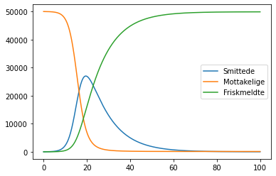

Tema 12: Differensiallikninger¶
Newtons 2. lov¶
Vi kan forstå sammenhengen mellom akselerasjon, fart og posisjon ved å bruke kinematikklikningene for konstant akselerasjon og forenkle ved å la akselerasjonen være konstant i et svært lite tidsrom dt. Eller vi kan formulere Newtons 2. lov som en differensiallikning og simulere bevegelsen ved Eulers metode. Vi skal se at dette er en ekvivalent framgangsmåte!
# Startbetingelser og konstanter
v0 = 0 # startfart m/s
s0 = 20 # startposisjon m
t0 = 0 # starttid i s
dt = 1E-5 # tidssteg i s
m = 1 # kg
g = 9.8 # tyngdeakselerasjon m/s^2
k = 0.5 # luftmotstandskoeffisienten
v = v0
s = s0
t = t0
while s >= 0:
a = -g - k*v/m # Modell utleda fra N2
v = v + a*dt # Eulers metode (men også kinematikklikning!)
s = s + v*dt # Eulers metode
t = t + dt
print("Ballen treffer bakken etter", t, "sekunder")
Ballen treffer bakken etter 2.425710000007424 sekunder
Smittemodellering fortsettelse¶
Ga en diskret smittemodellering noen urealistiske resultater?
La oss se på en kontinuerlig modell der vi modellerer smitten ved hjelp av differensiallikninger.
\[S'(t) = -aS(t)\cdot I(t)\]
\[I'(t) = aS(t)\cdot I(t) - bI(t)\]
\[R'(t) = -bI(t)\]
from pylab import *
# Konstanter og startbetingelser
N = 100000 # Antall mennesker
I0 = 15 # Antall smittede ved t0
S0 = (N - I0)*0.5 # Antall disponerte ved t0
R0 = 0 # Antall friskmeldte ved t0
a = 0.122/N*10
b = 0.1
I = I0
S = S0
R = R0
# Tidsparametre
dt = 1E-2
t0 = 0
t = 0
tid_slutt = 100 # dager
# Lister
smittede = [I0]
mottakelige = [S0]
friske = [R0]
tid = [t0]
# Simuleringsløkke
while t <= tid_slutt:
Sder = -a*S*I
Ider = a*S*I - b*I
Rder = b*I
# Eulers metode
S = S + Sder*dt
I = I + Ider*dt
R = R + Rder*dt
t = t + dt
smittede.append(I)
mottakelige.append(S)
friske.append(R)
tid.append(t)
plot(tid, smittede, label="Smittede")
plot(tid, mottakelige, label="Mottakelige")
plot(tid, friske, label="Friskmeldte")
legend()
show()
